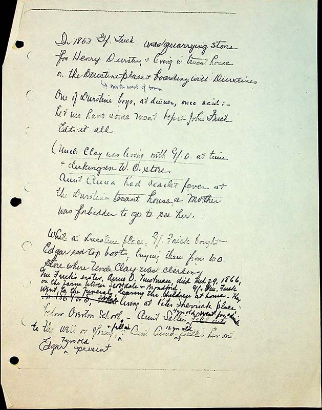

In 1863, Gf Frick was quarrying stone for Henry Durstine & living in tenant house on the Durstine place & boarding with Durstines. One of the Durstine boys at dinner, once said;- let me have some meat before John Frick eats it all.
Uncle Clay was living with Gf O. at time & clerking in W.O store.
Aunt Annahad scarlet fever at the Durstine tenant house & Mother was forbidden to go to see her.
While at Dursine place, GF Frick bought Edgar red top boots, buying them from WO [West Overton] store where Uncle Clay was clerking.
Gm Frick’s sister, Anna O Tinstman, died Mch 29, 1866, on the farm between Scottdale & Broadford. Gf & Gm Frick went to the funeral, leaving the children at home. They were living at Peter Sherrick place below Overton school.- Aunt Sallie ^ 4 years old went for a drink^ fto the well or spring ^& fell in . Aunt Anna pulled her out. Edgar ^7 years old present.